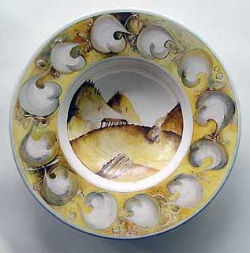

|
Alan Peascod
1943-2007
British-born Australian ceramist and teacher Alan Peascod passed
away on Thursday 11th January after a long battle with a lung disease.
Alan studied ceramics in Australia in the mid 1960s and in Britain
in 1968 and earned a PhD at the University of Wollongong in 1995.
He had been researching Islamic pottery throughout the Middle East
and Europe since 1972 and incorporated some of its technologies
into his own sculptural and vessel-based work, developing a characteristic
red and silver lustre on a black background. Amongst other similar
positions during his career, Alan was head of the ceramics department
at the Glasgow School of Art from 1985–86. He was awarded
eight research fellowships throughout his career. In 2002 he received
an Australian Foundation for Studies in Italy Grant to work with
Giampietro Rampini in Gubbio, where he researched 16th century maiolica
techniques, which he added to his repertoire.
A memorial service was held in Gulgong, rural NSW on Saturday 20th
January.
 |
 |
| Alan at work in Gubbio, 2002 |
Australian Baroque, 2002 |
|